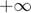

Second-Order Lab: Second-Order Linear DEs in MATLAB
In this lab, you will learn how to use iode to plot solutions of second-order ODEs. You will also learn to classify the behaviour of different types of solutions.
Moreover, you will write your own Second-Order ODE system solver, and compare its results to those of iode.
Opening the m-file lab5.m in the MATLAB editor, step through each part using cell mode to see the results. Compare the output with the PDF, which was generated from this m-file.
There are seven (7) exercises in this lab that are to be handed in on the due date of the lab. Write your solutions in the template, including appropriate descriptions in each step. Save the m-files and submit them on Quercus.
MAT292, Fall 2018, Stinchcombe & Khovanskii, modified from MAT292, Fall 2017, Stinchcombe & Sinnamon, modified from MAT292, Fall 2015, Sousa, based on Spring 2010, Jerrard
Contents
Student Information
Student Name: 1004220951
Student Number: Ruchir Tullu
Iode for Second-Order Linear DEs with constant coefficients
In the iode menu, select the Second order linear ODEs module. It opens with a default DE and a default forcing function f(t) = cos(2t). The forcing function can be plotted along with the solution by choosing Show forcing function from the Options menu.
Use this module to easily plot solutions to these kind of equations.
There are three methods to input the initial conditions:
Method 1. Enter the values for t0, x(t0), and x'(t0) into the Initial conditions boxes, and then click Plot solution.
Method 2. Enter the desired slope x'(t0) into the appropriate into the Initial conditions box, and then click on the graph at the point (t0,x(t0)) where you want the solution to start.
Method 3. Press down the left mouse button at the desired point (t0,x(t0)) and drag the mouse a short distance at the desired slope x'(t0). When you release the mouse button, iode will plot the solution.
Growth and Decay Concepts
We want to classify different kinds of behaviour of the solutions. We say that a solution:
grows if its magnitude tends to infinity for large values of t, that is, if either the solution tends to  or ,
decays if its magnitude converges to 0 for large values of t,
decays while oscillating if it keeps changing sign for large values of t and the amplitude of the oscillation tends to zero,
grows while oscillating if it keeps changing sign for large values of t and the amplitude of the oscillation tends to infinity.
Example
t = 0:0.1:10; % Example 1 figure(); y1 = exp(t); plot(t,y1) % Annotate the figure xlabel('t'); ylabel('f_1(t)'); title('The function e^t grows'); legend('f_1(t)=e^t'); % Example 2 figure(); y2 = -exp(t); plot(t,y2) % Annotate the figure xlabel('t'); ylabel('f_2(t)'); title('The function -e^{-t} decays'); legend('f_2(t)=-e^{t}'); % Example 3 figure(); y3 = exp(-t); plot(t,y3) % Annotate the figure xlabel('t'); ylabel('f_3(t)'); title('The function e^{-t} decays'); legend('f_3(t)=e^{-t}'); % Example 4 figure(); y4 = exp(-t).*cos(t); plot(t,y4) % Annotate the figure xlabel('t'); ylabel('f_4(t)'); title('The function e^{-t}cos(t) decays while oscillating'); legend('f_4(t)=e^{-t}*cos(t)'); % Example 5 figure(); y5 = exp(t).*sin(2*t); plot(t,y5) % Annotate the figure xlabel('t'); ylabel('f_5(t)'); title('The function e^{t}sin(2t) grows while oscillating'); legend('f_5(t)=e^{t}sin(2t)'); % Example 6 figure(); y6 = sin(3*t); plot(t,y6) % Annotate the figure xlabel('t'); ylabel('f_6(t)'); title('The function sin(3t) neither decays nor grows, it just oscillates'); legend('f_6(t)=sin(3t)'); % |Remark.| A function which |grows while oscillating| doesn't |grow|, % because it keeps changing sign, so it neither tends to $+\infty$ nor to % $-\infty$.
Exercise 1
Objective: Use iode to solve second-order linear DEs. And classify them.
Details: Consider the ODE:
4y'' + 4 y' + 17 y = 0
(a) Use iode to plot six (6) numerical solutions of this equation with "random" initial data (use Method 3 above) and press-and-drag at various initial points, with some of the slopes being positive and some negative)
Use only initial points in the part of the window where 0<t<1 and -1<x<1 and take all initial slopes between -3 and +3.
Change the window to [0,10]x[-3,3]. Save a cropped screenshot with the filename ex1_<UTORid>.png Changing "UTORid" below will result in the image being included when you "Publish".

(b) Based on the results of (a), state what percentage of solutions decay, grow, grow while oscillating, or decay while oscillating.
All solutions decay while oscillating to zero.
(c) Solve the DE and write the exact solution. Explain why this justifies your answer in (b).
The exact solution is as follows:
y = c1*exp(-t/2)*cos(2t) + c2*exp(-t/2)*sin(2t), where c1 and c2 are real values constants. SInce as t increases, the value of the function decreases by the negative exponential, the function decays. Since there are sinusoidal terms involved, the solution oscillates while decaying. For the trivial case of y = 0, the differential equation is also satisfied.
Exercise 2
Consider the ODE:
y'' + sqrt(3) y' - y/4 = 0
Repeat (a), (b), (c) from Exercise 1 with this DE.

All solutions grow, except for the one centered at x=0.
The analytic solution to this differential equation is:
y = c1*exp((-sqrt(3) + 2) / 2) + c2*exp((-sqrt(3) - 2) / 2)
We can see that both the exponents on the exponentials are positive. This means that all solutions will grow. For the trivial case of y = 0, we see that the differential equation is satisfied, hence there is no growth.
Exercise 3
Consider the ODE:
y'' + sqrt(3) y' + y/4 = 0
Repeat (a), (b), (c) from Exercise 1 with this DE.
%<<ex3_tulluruc.png>> % % We can see that the solutions decay as t increases. % % The analytic solution to this differential equation is: % % y = c1*exp((-sqrt(3) + sqrt(2)) / 2) + c2*exp((-sqrt(3) - sqrt(2)) / 2) % % We can see that both the exponents are negative. As t tends to infinity, % the value of y tends to zero. The trivial case of y = 0 also satisfies the differential % equation.
Example
Consider the ODE:
y'' + 2y' + 10y = 0
The solution is
y(t) = e^(-t) ( c1 cos(3t) + c2 sin(3t) )
From this, it is easy to see that all solutions decay while oscillating.
Similarly, for the equation
y'' - 2y' + 10y = 0
The solution is
y(t) = e^t ( c3 cos(3t) + c4 sin(3t) )
which grows while oscillating.
Exercise 4
Consider the fourth-order ODE:
y'''' + 2 y''' + 6 y'' + 2 y' + 5 y = 0
(a) Find the general solution for this problem. You can use MATLAB to find the roots of the characteristic equation numerically with roots or symbolically with solve.
p = [1 2 6 2 5]; % highest order coefficients--> constant coefficient
r = roots(p);
r = 4×1 complex
-1.0000 + 2.0000i
-1.0000 - 2.0000i
0.0000 + 1.0000i
0.0000 - 1.0000i
We see that there are 4 roots. the solution is then:
y = c1*exp(-t)*cos(2t) + c2*exp(-t)*sin(2t) + c3*cos(t) + c4*sin(t)
(b) Predict what percentage of solutions with random initial data will grow, decay, grow while oscillating, and decay while oscillating. Explain.
As t tends to infinity, the higher frequency sinusoids dissappear. The oscillation is only of one frequency, so there is no beating. The majority of solutions will thus only oscillate without any decay. However, if c3=c4=0, then the solution will oscillate while decaying.
Exercise 5
Objective: Classify equations given the roots of the characteristic equation.
Details: Your answer can consist of just a short sentence, as grows or decays while oscillating.
Consider a second-order linear constant coefficient homogeneous DE with r1 and r2 as roots of the characteristic equation.
Summarize your conclusions about the behaviour of solutions for randomly chosen initial data when.
(a) 0 < r1 < r2 Grows
(b) r1 < 0 < r2 Grows
(c) r1 < r2 < 0 Decays
(d) r1 = alpha + beta i and r2 = alpha - beta i and alpha < 0 Decays while oscillating
(e) r1 = alpha + beta i and r2 = alpha - beta i and alpha = 0 Oscillates
(f) r1 = alpha + beta i and r2 = alpha - beta i and alpha > 0 Grows while oscillating
Summary:
|If the roots are real, then the solutions grows as long as one of the roots of the characteristic equation is positve. If both roots are negative, then the solution will decay. In the case that the roots are complex, if the real part of the root is negative, then the solution will decay while oscillating. If the real part of the root is equal to zero, the solution will oscillate indefinitely. If the real part of the root is greater than zero, the solution will grow while oscillating. |
Numerical Methods for Second-Order ODEs
One way to create a numerical method for second-order ODEs is to approximate derivatives with finite differences in the same way of the Euler method.
This means that we approximate the first derivative by:
y'(t[n]) ~ ( y[n] - y[n-1] ) / h
and
y''(t[n]) ~ ( y'(t[n+1]) - y'(t[n]) ) / h ~ ( y[n+1] - 2 y[n] + y[n-1]) / ( h^2 )
By writing these approximations into the ODE, we obtain a method to get y[n+1] from the previous two steps y[n] and y[n-1].
The method for approximating solutions is:
1. Start with y[0]=y0
2. Then we need to get y[1], but we can't use the method, because we don't have two iterations y[0] and y[-1](!!). So we use Euler to get
y[1] = y0 + y1 h
y1 is the slope given by the initial condition
3. Use the method described above to get y[n] for n=2,3,....
Exercise 6
Objective: Write your own second-order ODE solver.
Details: Consider the second-order ODE
y'' + p(t) y' + q(t) y = g(t)
Write a second-order ODE solver using the method described above.
This m-file should be a function which accepts as variables (t0,tN,y0,y1,h), where t0 and tN are the start and end points of the interval on which to solve the ODE, y0, y1 are the initial conditions of the ODE, and h is the stepsize. You may also want to pass the functions into the ODE the way ode45 does (check MATLAB lab 2). Name the function DE2_<tulluruc>.m.
Note: you will need to use a loop to do this exercise.
Exercise 7
Objective: Compare your method with iode
Details: Use iode to plot the solution of the ODE y'' + exp(-t/5) y' + (1-exp(-t/5)) y = sin(2*t) with the initial conditions y(0) = 1, y'(0) = 0
Use the window to [0,20]x[-2,2] Without removing the figure window, plot your solution (in a different colour), which will be plotted in the same graph.
Comment on any major differences, or the lack thereof.

%Initial conditions and parameters h = 0.1; t0 = 0; tN = 20; y0 = 1; y1 = 0; %Symbolic functions p = @(t) exp(-t/5); q = @(t) 1 - exp(-t/5); g = @(t) sin(2*t); %Plot [t,y] = DE2_tulluruc(p,q,g,t0,tN,y0,y1,h); plot(t,y,'g-o') legend('DE2','Iode Solution') hold on %As we can see from the plot, the two functions plotted are essentially the %same, with very little to no noticeable difference between the two.